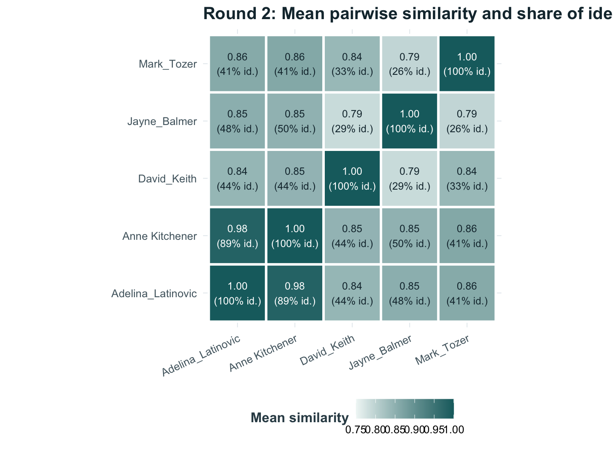
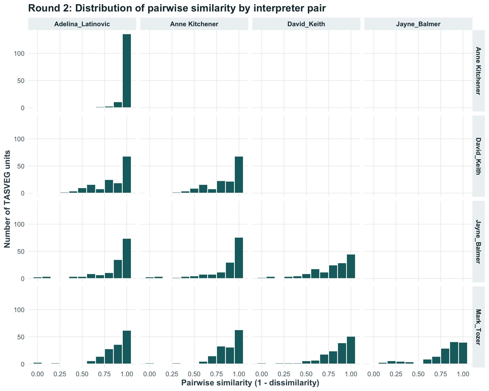
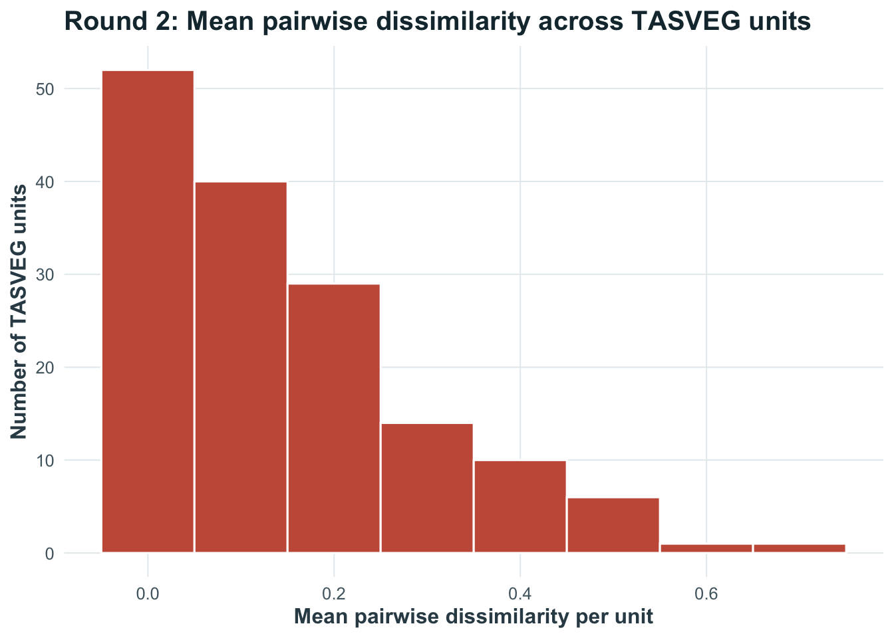
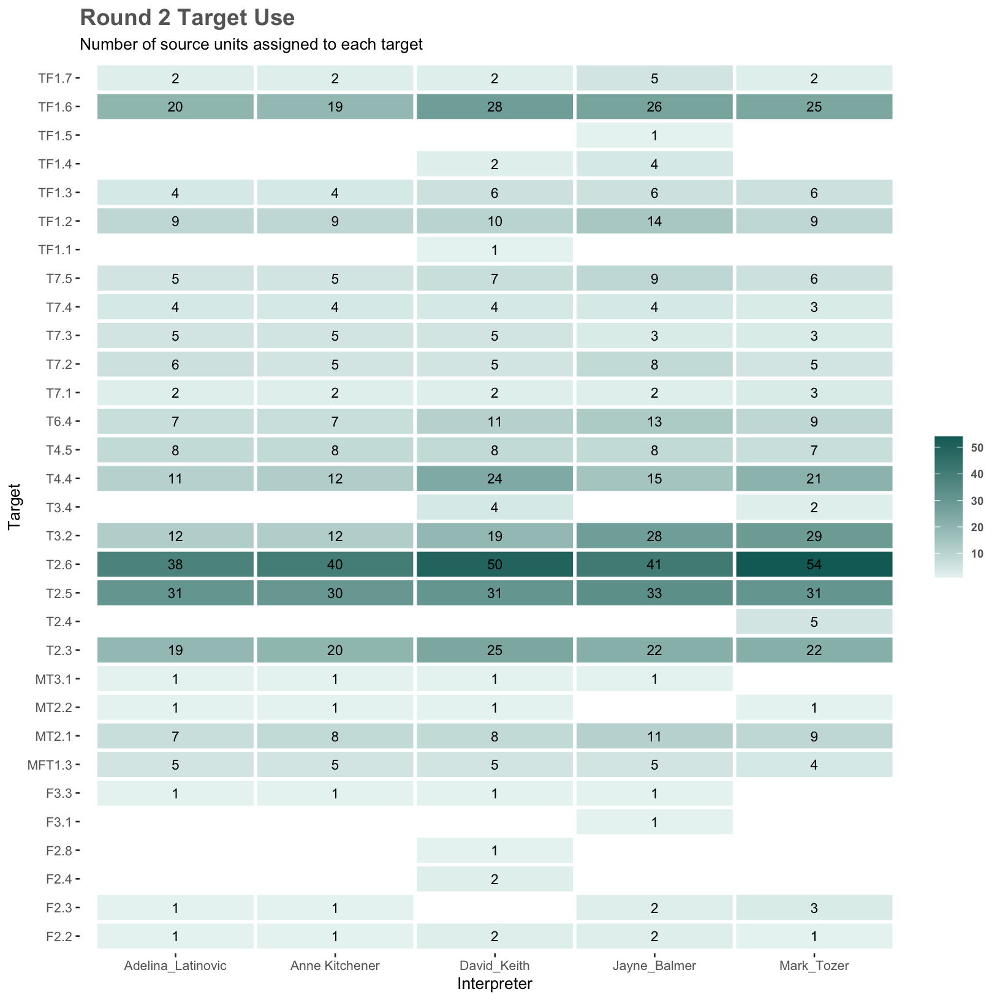
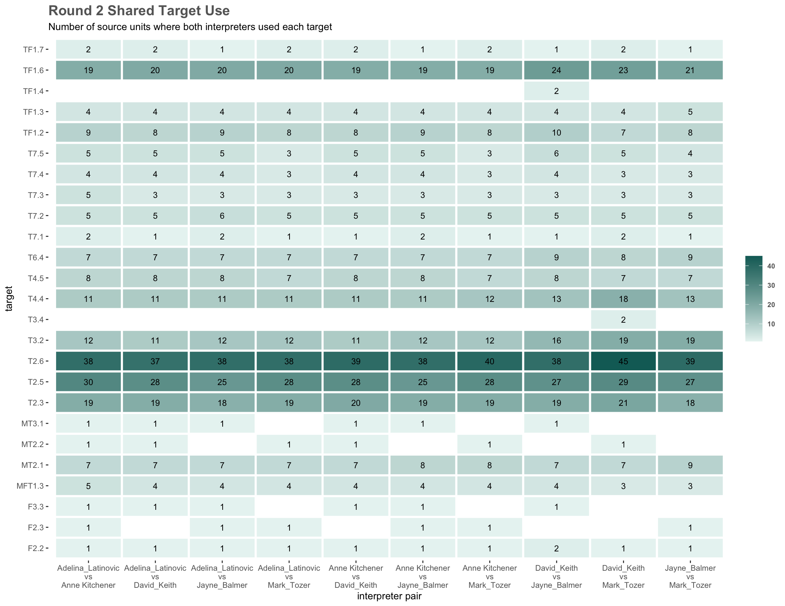
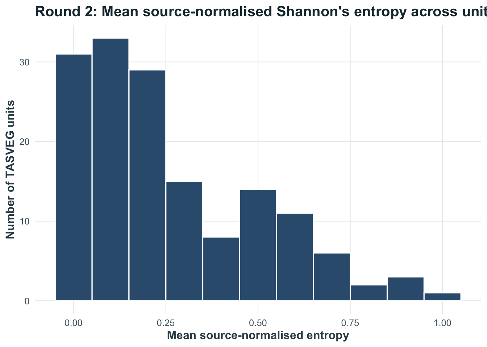
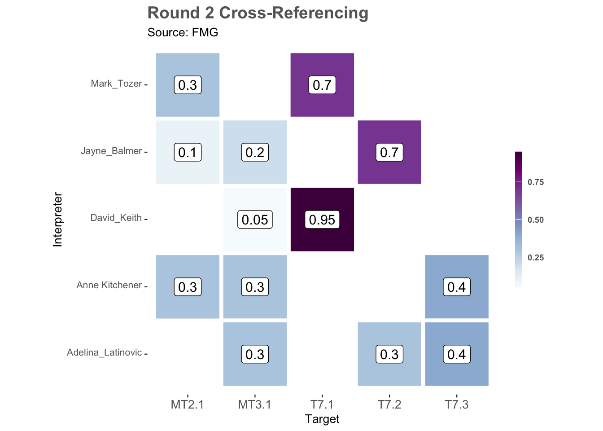
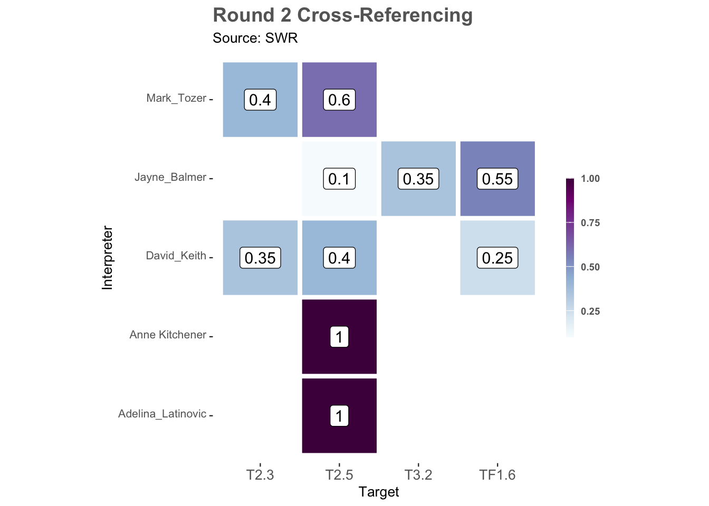

library(readr)
library(dplyr)
library(tidyr)
library(ecoSynthesis)
library(ggplot2)
here::i_am("analysis/round-2.qmd")
output_dir <- here::here("../results/XREFs")
source(here::here("../scripts/setup.R"))
source(here::here("../scripts/functions.R"))
load(here::here(output_dir, "lookup-tables.rda"))
load(here::here(output_dir, "memb-tables.rda"))9 Round two
Following structured group discussions of Round 1 discrepancies (Chapter 8), all interpreters revised their assignments in Round 2 (Hemming et al. 2018; IUCN 2025). Round 2 includes five interpreters (Adelina_Latinovic, Anne Kitchener, David_Keith, Jayne_Balmer, and Mark_Tozer), and every interpreter assessed the complete set of 153 eligible TASVEG 5.0 communities. Because Round 2 incorporates both shared conceptual clarification and full coverage across all five interpreters, it forms the basis for the synthesis and spatial outputs in Part III (Chapter 11–Chapter 13).
Our setup for this R session loads ecoSynthesis, tidyverse/plotting packages, custom plot styling, and the validated lookup and membership tables:
9.1 Filtering Round 2 and building the 3D membership matrix
We filter TASVEG_clean to Round 2 and construct the 3D membership_matrix ([source, target, interpreter]) via ecoSynthesis::membership_matrix(). Notice that all 5 interpreters now have 153 assessed source units across 31 candidate EFGs (compared with 29 EFGs in Round 1), and Mark_Tozer’s split T4.5 entry for SWR (Chapter 7) is summed automatically inside the matrix:
TASVEG_revised <- filter(TASVEG_clean, round == 2)
TASVEG_mtx_r2 <- membership_matrix(TASVEG_revised)
TASVEG_mtx_r2<membership_matrix> 153 sources x 31 targets x 5 interpreters• Adelina_Latinovic: 153 source units assessed• Anne Kitchener: 153 source units assessed• David_Keith: 153 source units assessed• Jayne_Balmer: 153 source units assessed• Mark_Tozer: 153 source units assessedUse `unclass(data)[source, target, interpreter]` to view values.We can inspect an individual slice of the 3D array using unclass()—for example, the first four TASVEG units across the first six target EFGs for Adelina_Latinovic:
unclass(TASVEG_mtx_r2)[1:4, 1:6, "Adelina_Latinovic"] target
source F2.2 F2.3 F2.4 F2.8 F3.1 F3.3
AAP 0.0000000 0.0000000 0 0 0 0
AHF 0.3333333 0.3333333 0 0 0 0
AHL 0.0000000 0.0000000 0 0 0 0
AHS 0.0000000 0.0000000 0 0 0 09.2 Inter-interpreter agreement (calc_agreement)
9.2.1 Global agreement between interpreter pairs
Calling calc_agreement(TASVEG_mtx_r2) computes global pairwise agreement across all 10 unique interpreter pairs (mirrored symmetrically with diagonal = 1). Compared to Round 1 (Chapter 8), every pair of interpreters now compares all 153 units and achieves substantially higher mean similarity (\(\ge 0.84\) across every pair):
ag2_global <- calc_agreement(TASVEG_mtx_r2)
ag2_global# A tibble: 25 × 7
interpreter_x interpreter_y n_units mean_similarity median_similarity
<chr> <chr> <int> <dbl> <dbl>
1 Adelina_Latinovic Adelina_Latinovic 153 1 1
2 Adelina_Latinovic Anne Kitchener 153 0.982 1
3 Adelina_Latinovic David_Keith 153 0.842 0.9
4 Adelina_Latinovic Jayne_Balmer 153 0.853 0.95
5 Adelina_Latinovic Mark_Tozer 153 0.859 0.9
6 Anne Kitchener Adelina_Latinovic 153 0.982 1
7 Anne Kitchener Anne Kitchener 153 1 1
8 Anne Kitchener David_Keith 153 0.846 0.9
9 Anne Kitchener Jayne_Balmer 153 0.848 0.95
10 Anne Kitchener Mark_Tozer 153 0.863 0.9
# ℹ 15 more rows
# ℹ 2 more variables: share_identical <dbl>, mean_dissimilarity <dbl>The heatmap below visualises the global Round 2 pairwise similarity matrix:
ggplot(ag2_global, aes(x = interpreter_x, y = interpreter_y, fill = mean_similarity)) +
geom_tile(colour = "white", linewidth = 1) +
geom_text(
aes(
label = sprintf("%.2f\n(%.0f%% id.)", mean_similarity, 100 * share_identical),
colour = mean_similarity > 0.88
),
size = 3.2
) +
scale_fill_gradient(low = teal_low, high = teal_high, limits = c(0.75, 1)) +
label_colour_scale +
labs(
title = "Round 2: Mean pairwise similarity and share of identical profiles",
x = NULL,
y = NULL,
fill = "Mean similarity"
) +
coord_fixed() +
theme_wp3() +
theme(axis.text.x = element_text(angle = 25, hjust = 1))
9.2.2 Per-unit pairwise dissimilarity
Next, calc_agreement(TASVEG_mtx_r2, by_source = TRUE) computes pairwise similarity and dissimilarity for all 1,530 unit-pair combinations (153 units × 10 interpreter pairs). The faceted histograms illustrate the strong concentration near \(S = 1\) across all ten pairs:
ag2_by_source <- calc_agreement(TASVEG_mtx_r2, by_source = TRUE)
ggplot(ag2_by_source, aes(x = similarity)) +
geom_histogram(binwidth = 0.1, fill = teal_high, colour = "white") +
facet_grid(rows = vars(interpreter_x), cols = vars(interpreter_y)) +
labs(
title = "Round 2: Distribution of pairwise similarity by interpreter pair",
x = "Pairwise similarity (1 - dissimilarity)",
y = "Number of TASVEG units"
) +
theme_wp3()
Summarising ag2_by_source by source identifies how many TASVEG communities achieved complete consensus across all five interpreters in Round 2, lists the 10 remaining most-contested units, and plots the unit-level dissimilarity distribution:
unit_disagreement_r2 <- ag2_by_source |>
group_by(VEGCODE = source) |>
summarise(
mean_dissimilarity = mean(dissimilarity),
min_dissimilarity = min(dissimilarity),
max_dissimilarity = max(dissimilarity),
n_pairs = n(),
.groups = "drop"
) |>
arrange(desc(mean_dissimilarity), VEGCODE)
message(sprintf(
"%s of %s units have identical profiles from every interpreter in Round 2.",
sum(unit_disagreement_r2$max_dissimilarity < 0.001),
nrow(unit_disagreement_r2)
))31 of 153 units have identical profiles from every interpreter in Round 2.head(unit_disagreement_r2, 10)# A tibble: 10 × 5
VEGCODE mean_dissimilarity min_dissimilarity max_dissimilarity n_pairs
<chr> <dbl> <dbl> <dbl> <int>
1 FMG 0.725 0.3 1 10
2 SWR 0.56 0 0.9 10
3 FSM 0.52 0 1 10
4 SBR 0.52 0 1 10
5 AHL 0.518 0 0.9 10
6 SMP 0.49 0.3 0.9 10
7 FWU 0.475 0 0.8 10
8 ARS 0.465 0 1 10
9 NLA 0.445 0 0.9 10
10 SRH 0.44 0 1 10ggplot(unit_disagreement_r2, aes(x = mean_dissimilarity)) +
geom_histogram(binwidth = 0.1, fill = rust_high, colour = "white") +
labs(
title = "Round 2: Mean pairwise dissimilarity across TASVEG units",
x = "Mean pairwise dissimilarity per unit",
y = "Number of TASVEG units"
) +
theme_wp3()
9.3 Target usage patterns across interpreters
Using ecoSynthesis::membership_target_heatmap() and ecoSynthesis::membership_target_pair_heatmap() on TASVEG_revised shows how evenly the 31 candidate EFGs are used across all five interpreters and ten interpreter pairs after group discussion:
membership_target_heatmap(TASVEG_revised) +
labs(title = "Round 2 Target Use")
membership_target_pair_heatmap(TASVEG_revised) +
labs(title = "Round 2 Shared Target Use")
NotePackage caveat: hardcoded plot titles in
ecoSynthesis v0.0.0.9005
Both membership_target_heatmap() (default "Round X Target Use") and membership_target_pair_heatmap() (default "Round 1 Shared Target Use") hardcode their plot titles and do not yet accept a round filter in v0.0.0.9005. Pre-filtering to round == 2 and appending + ggplot2::labs(title = ...) ensures accurate Round 2 labels without modifying package code.
9.4 Within-interpreter uncertainty: Shannon’s entropy
We next compute normalised Shannon’s entropy for Round 2 using ecoSynthesis::calc_entropy_tbl() across the entire dataset (overall), per interpreter (by_interpreter), per TASVEG community (by_source), and per target EFG (by_target).
NoteIncomplete-sum warning on
HSE
Recall from Chapter 7 that Jayne_Balmer’s Round 2 profile for HSE sums to 0.90. When calc_entropy_tbl() calls calc_shannons_entropy() on that vector, ecoSynthesis emits an informative warning (sum of the probabilities is less than 1 (0.9)) and automatically re-normalises the non-zero probabilities internally (\(p_k / \sum p\)) so entropy remains strictly comparable on \([0, 1]\).
calc_entropy_tbl(TASVEG_revised, overall = "overall")# A tibble: 1 × 4
round mean_entropy_source_norm…¹ mean_entropy_interpr…² mean_entropy_set_nor…³
<dbl> <dbl> <dbl> <dbl>
1 2 0.261 0.323 0.0767
# ℹ abbreviated names: ¹mean_entropy_source_normalised,
# ²mean_entropy_interpreter_normalised, ³mean_entropy_set_normalisedcalc_entropy_tbl(TASVEG_revised, overall = "by_interpreter")# A tibble: 5 × 5
expert round mean_by_interpreter_entropy_s…¹ mean_by_interpreter_…²
<chr> <dbl> <dbl> <dbl>
1 David_Keith 2 0.356 0.434
2 Mark_Tozer 2 0.347 0.432
3 Jayne_Balmer 2 0.301 0.350
4 Anne Kitchener 2 0.154 0.205
5 Adelina_Latinovic 2 0.146 0.194
# ℹ abbreviated names: ¹mean_by_interpreter_entropy_source_normalised,
# ²mean_by_interpreter_entropy_interpreter_normalised
# ℹ 1 more variable: mean_by_interpreter_entropy_set_normalised <dbl>Inspecting the highest-entropy source units and target EFGs highlights communities that interpreters consistently view as ecologically transitional or multi-functional (for example, woodland/forest ecotones or palustrine wetlands):
ent2_by_source <- calc_entropy_tbl(TASVEG_revised, overall = "by_source")
head(ent2_by_source, 10)# A tibble: 10 × 5
VEGCODE round mean_by_source_entropy_source_normalised mean_by_source_entro…¹
<chr> <dbl> <dbl> <dbl>
1 DPD 2 0.953 0.953
2 SLL 2 0.909 0.909
3 SSK 2 0.903 0.903
4 NAR 2 0.891 0.891
5 DSC 2 0.795 0.795
6 DVF 2 0.767 0.767
7 SCH 2 0.748 0.748
8 SRF 2 0.747 0.747
9 RPW 2 0.744 0.881
10 DAZ 2 0.707 0.707
# ℹ abbreviated name: ¹mean_by_source_entropy_interpreter_normalised
# ℹ 1 more variable: mean_by_source_entropy_set_normalised <dbl>calc_entropy_tbl(TASVEG_revised, overall = "by_target") |>
head(10)# A tibble: 10 × 5
EFG round mean_by_target_entropy_source_normalised mean_by_target_entropy…¹
<chr> <dbl> <dbl> <dbl>
1 F3.1 2 0.636 0.892
2 T7.2 2 0.563 0.817
3 F2.2 2 0.548 0.869
4 F2.4 2 0.548 0.869
5 T7.1 2 0.489 0.696
6 T7.5 2 0.482 0.655
7 MT3.1 2 0.471 0.776
8 F2.3 2 0.392 0.611
9 T4.5 2 0.373 0.492
10 T4.4 2 0.373 0.456
# ℹ abbreviated name: ¹mean_by_target_entropy_interpreter_normalised
# ℹ 1 more variable: mean_by_target_entropy_set_normalised <dbl>ggplot(ent2_by_source, aes(x = mean_by_source_entropy_source_normalised)) +
geom_histogram(binwidth = 0.1, fill = "#355C7D", colour = "white") +
labs(
title = "Round 2: Mean source-normalised Shannon's entropy across units",
x = "Mean source-normalised entropy",
y = "Number of TASVEG units"
) +
theme_wp3()
9.5 Inspecting the most contested Round 2 units
Finally, we inspect the two units with the largest remaining pairwise disagreement in Round 2 (FMG and SWR) using membership_tile_plot(), overriding the default title to reflect Round 2:
TASVEG |>
dplyr::filter(VEGCODE == "FMG") |>
dplyr::glimpse()Rows: 1
Columns: 4
$ VEG_GROUP <chr> "Agricultural, urban and exotic vegetation"
$ VEGCODE <chr> "FMG"
$ VEGCODE_D <chr> "(FMG) Marram grassland"
$ eligible <lgl> TRUEdplyr::filter(TASVEG_revised, VEGCODE == "FMG") |>
membership_tile_plot() +
labs(title = "Round 2 Cross-Referencing")
TASVEG |>
dplyr::filter(VEGCODE == "SWR") |>
dplyr::glimpse()Rows: 1
Columns: 4
$ VEG_GROUP <chr> "Scrub, heathland and coastal complexes"
$ VEGCODE <chr> "SWR"
$ VEGCODE_D <chr> "(SWR) Western regrowth complex"
$ eligible <lgl> TRUEdplyr::filter(TASVEG_revised, VEGCODE == "SWR") |>
membership_tile_plot() +
labs(title = "Round 2 Cross-Referencing")